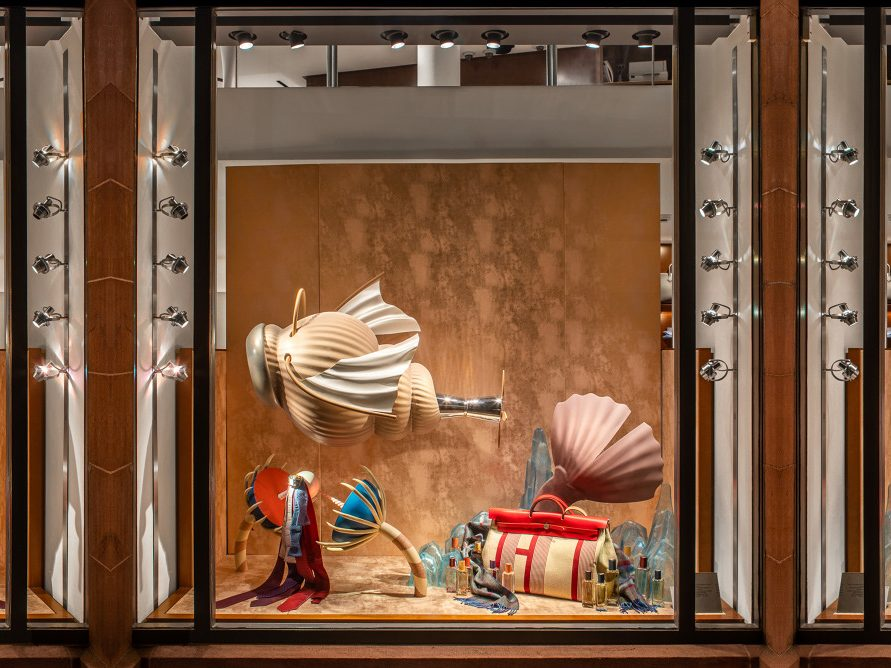
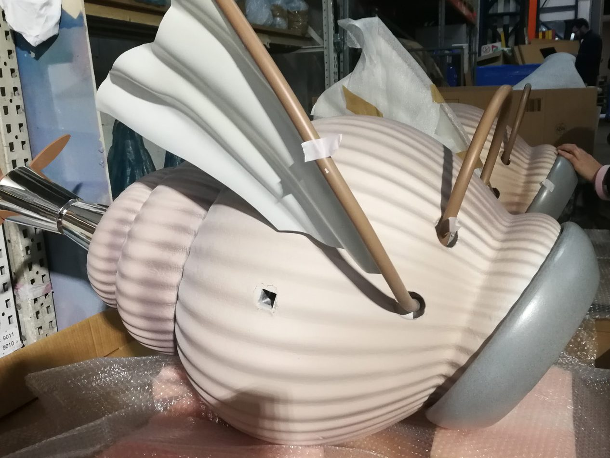
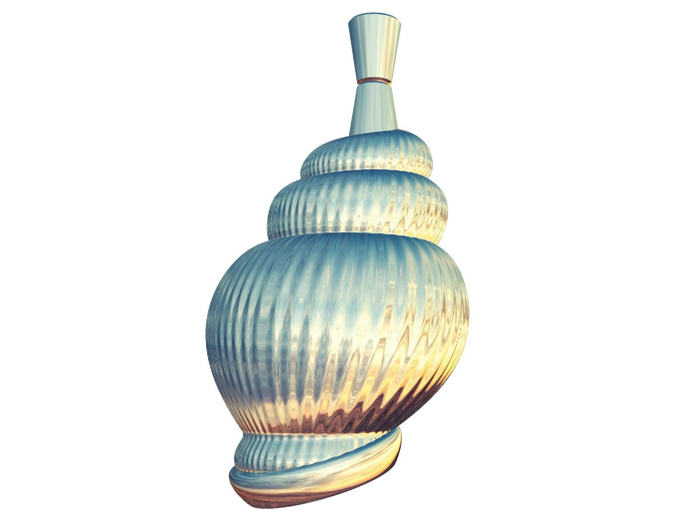
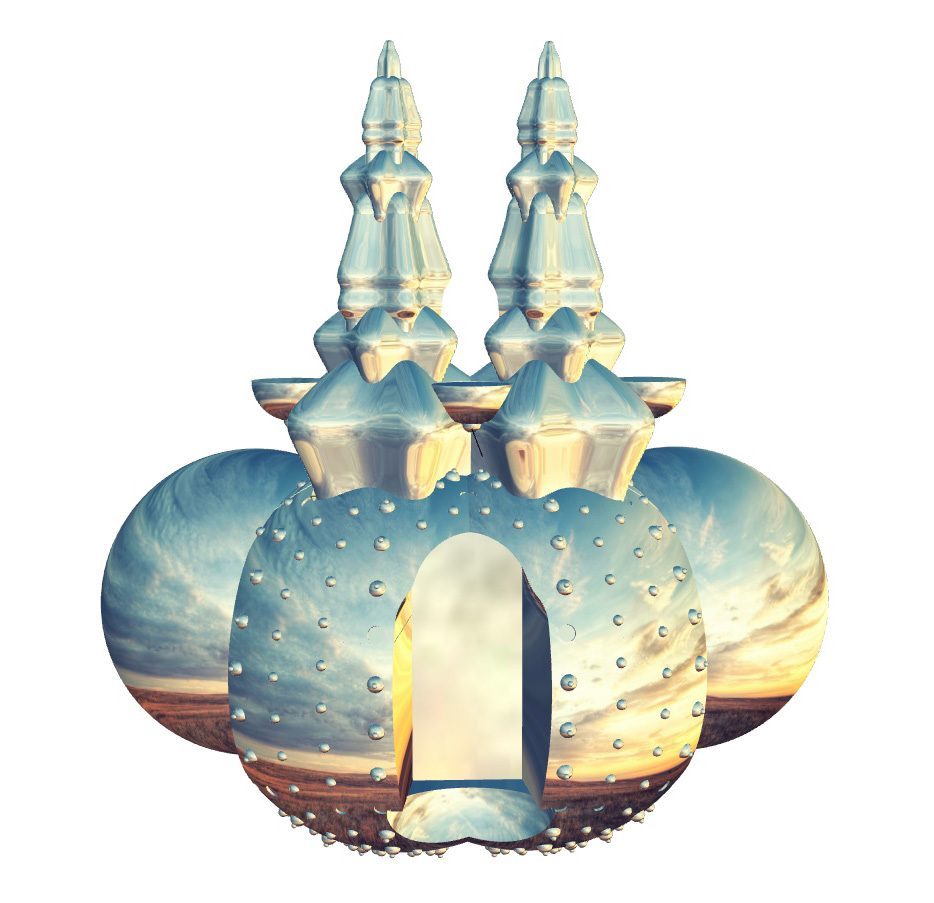
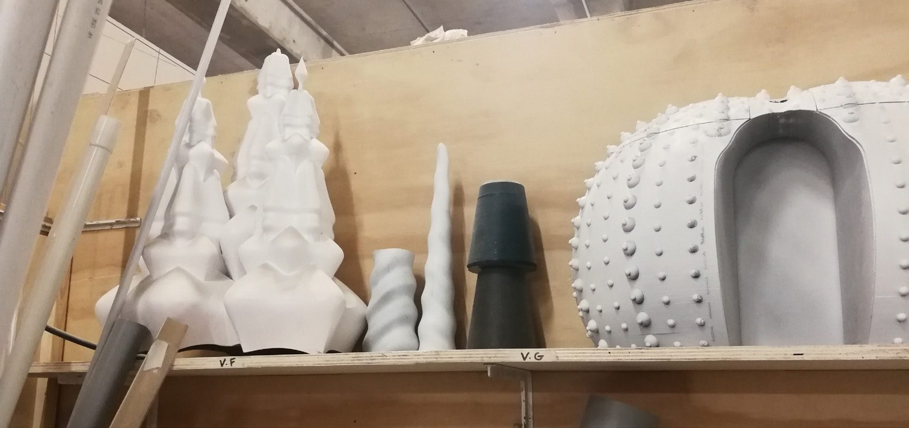
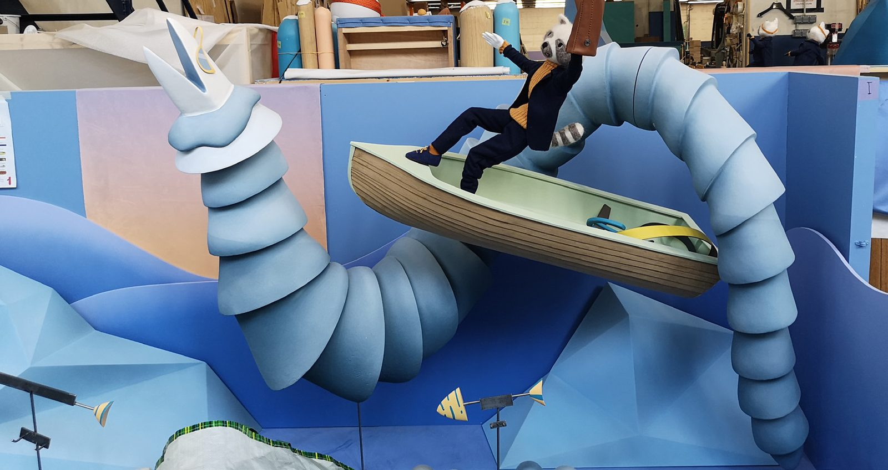
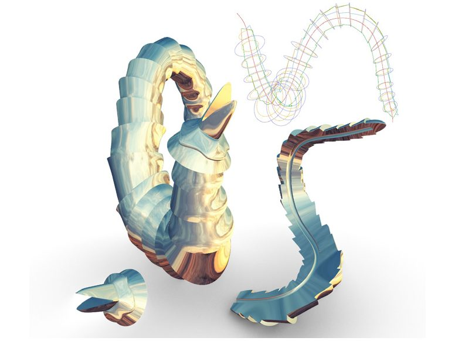
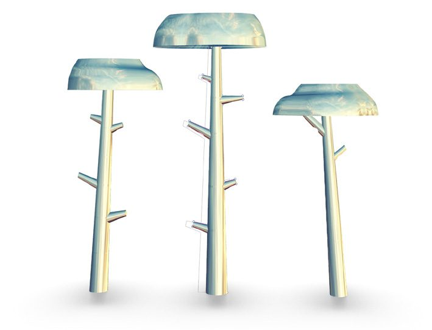
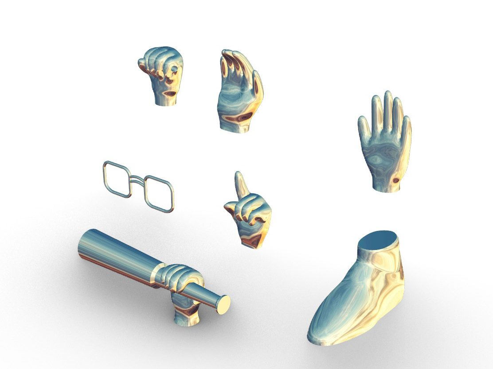

Luxe & production2019
Vitrines Hermès France H19
Modélisations et usinage pour un décor de vitrine.
Je fais le lien entre modélisation paramétrique et savoir-faire artisanal. Scénographies, décors et pièces textiles, fabriqués avec des ateliers en France et au Maroc. En atelier comme en remote, entre Marseille et Paris.
Conception et fabrication pour des marques de luxe, le cinéma et le spectacle vivant — du rendu 3D à la pièce livrée.






De la définition 3D à la pièce montée. Ce qui suit n'est plus du travail de commande.
Après plusieurs années passées à développer des dispositifs pour d'autres, FenFutures est devenu l'espace où cette recherche avance pour elle-même. La pièce ci-dessous, et celles que les notes ouvrent, partagent une même méthode : une définition paramétrique poussée jusqu'à la fabrication, entre textile et impression 3D.


Un caftan dont la broderie n'est pas dessinée mais calculée. La pièce va d'un bout à l'autre de la chaîne : le motif, le patronage, la matière, le rendu — et deux échantillons cousus main qui vérifient que la chose peut exister en atelier. Elle a été menée pendant Body Architecture 2.0, la masterclass de Filippo Nassetti (PAACADEMY, février 2023), d'où viennent aussi les masques de la même série.
Le point de départ n'était pas une forme mais une question : qu'est-ce qui rend un caftan marocain ? J'ai reporté mes premières images sur un diagramme à deux axes — traditionnel / interprété, oriental / marocain — pour voir où elles tombaient. Presque toutes du côté oriental : l'outil restitue un imaginaire, pas une identité. Ce qui fait le marocain tient dans les techniques et dans les mains qui les tiennent — le ntaâ de Fès, la sfifa skali, le perlage — pas dans la silhouette.
J'ai donc cherché le motif du côté de la matière plutôt que du répertoire. Les explorations tournent autour d'une architecture corallienne : floral et géométrique à la fois, ce que le motif de Fès fait déjà. Trouver l'image à échantillonner a demandé autant de travail que le motif : il fallait une photographie dont le rouge, le contraste et la luminosité portent chacun une information exploitable à une étape différente du calcul.
La définition Grasshopper lit cette image, en tire des courbes de niveau, les ferme, les symétrise. En sortie : un motif dont la densité, l'épaisseur et le remplissage restent réglables jusqu'au dernier moment. Ce que la broderie paramétrique permet et que le dessin à la main ne permet pas, c'est exactement ça — changer d'avis sur toute la surface d'un coup, sans recommencer le tracé.
La broderie imprimée est la partie qui sort de l'écran. La définition ne produit pas un objet à trancher mais directement le parcours de la buse : chaque bourrelet est une trajectoire. Imprimé sur du tulle tendu, il prend le tissu ; les perles sont ensuite cousues à la main dans les creux prévus pour elles. Deux échantillons, un noir et un blanc — assez pour savoir que le geste de l'atelier et la machine peuvent tenir sur le même morceau d'étoffe.
Le patronage rejoue la même symétrie à l'échelle du vêtement : le motif se pose sur les pièces à plat, et c'est là que se décide où va le plein, où va le vide, où vont l'or et les perles. Le rendu final est monté sous Marvelous Designer, matiéré sous Substance et éclairé sous Blender. Le défilé digital en est le dernier état : le vêtement est posé sur un personnage animé sous Mixamo, puis rendu sous Blender — porté et marché sans qu'un mètre de tissu ait été coupé, et sans qu'aucune caméra n'ait tourné.
Une famille de pièces où la forme dépasse le volume d'impression : elle est découpée, tirée en plusieurs parties, puis remontée. L'assemblage n'est pas un pis-aller de fabrication — c'est lui qui décide où la forme a le droit d'être coupée, et ces lignes-là restent visibles sur l'objet fini.
La première sculpture de cette famille, et celle qui en pose la contrainte : une forme organique modélisée puis imprimée en PETG transparent, en plusieurs parties, et assemblée.
.jpg)
.jpg)
Une famille de contenants imprimés d'une seule paroi continue. La buse ne s'arrête pas entre la base et le col : tout ce qu'on voit à la surface — les cannelures, le relief, les couleurs qui basculent — est le tracé lui-même. Rien n'est peint ni texturé après coup.
Le profil est une étoile, lissée par un loft entre des cercles qu'une rotation décale les uns par rapport aux autres : c'est de là que vient le mouvement en vortex. C'est aussi ce qui tient l'objet debout. Une paroi de 0,6 mm n'a aucune raison d'être rigide ; pliée en cannelures vrillées, elle le devient. Le pli remplace l'épaisseur.
Le filament est coextrudé en trois ou quatre couleurs, et c'est l'angle d'impression qui décide de celle qui affleure. De loin, l'objet change de teinte quand on tourne autour. De près, une même face en montre deux à la fois, selon qu'on voit le flanc extérieur ou le flanc intérieur d'une cannelure.
Six objets sortent de cette même définition, et chacun en déplace un paramètre. Ils se lisent un par un ci-dessous : ouvrir l'un d'eux change les images du cadre.
Le point de départ de la famille : la définition à l'état simple, sans variation ajoutée. Trois soliflores tirés du même profil en étoile, un col assez étroit pour tenir une tige droite sans la serrer.
C'est sur eux que la contrainte se voit le mieux. Un col fin et un ventre large, en une seule paroi, c'est exactement le cas où un cylindre lisse s'effondrerait : ce sont les cannelures qui portent le rétrécissement.
Là où les soliflores montrent le profil, les duos montrent la couleur — et il en faut deux pour ça. Une seule pièce ne prouve rien : c'est la comparaison, à la même heure et sous la même lumière, qui rend l'effet lisible.
Le filament est coextrudé sur trois ou quatre pistes. L'angle sous lequel la buse dépose la matière décide de celle qui affleure, si bien que deux objets issus du même rouleau ne renvoient pas la même teinte. Et sur un seul d'entre eux, le flanc extérieur d'une cannelure et son flanc intérieur ne donnent pas la même couleur non plus.
Les duos comparent deux tirages du même profil ; le trio compare trois profils différents issus de la même architecture. Même hauteur, même nombre de branches, même filament — et une seule variable qu'on déplace : la courbe intermédiaire du loft, qu'on fait monter ou descendre entre la base et le col.
Ça suffit à changer complètement la silhouette sans que la famille se défasse. Le filament à dégradé fait le reste : comme la couleur avance avec la longueur imprimée, deux pièces de hauteurs identiques mais de volumes différents ne consomment pas la même matière, et ne sortent jamais de l'imprimante avec le même dégradé.
Le seul de la famille à ne pas être vertical. Sa forme large et basse laisse la paroi presque libre entre la base et le bord, et c'est là que la finesse devient sensible : imprimé en buse 0,6 mm, le mur cède un peu sous les doigts et revient — un effet de ressort, sans que l'objet perde sa tenue.
Le tracé continu, lui, se lit à l'œil comme un empilement de strates. C'est la même paroi unique que sur les soliflores, mais posée à plat elle raconte l'impression au lieu de la cacher.
Les cinq autres contenants tirent leur surface du profil. Celui-ci est le seul à la tirer du maillage — et c'est pour ça qu'il existe.
Le point de départ est la même surface loftée, mais lisse. Convertie en maillage, elle reçoit une texture de bruit qui lui sert de carte de hauteur : chaque sommet est déplacé le long de la normale à la surface, d'une valeur lue dans le bruit au point le plus proche. Vers l'extérieur, vers l'intérieur, selon le point.
Toute la recherche tient dans cette valeur. Trop faible, le relief ne se sent pas sous la main et l'objet ne raconte rien. Trop forte, la paroi part en porte-à-faux, l'impression laisse des trous, et le vase fuit. L'étanchéité est le juge — c'est la seule fois de la série où le critère n'est pas visuel.
C'est le seul objet de la famille qui n'est pas une paroi unique — et il y a sa place quand même, parce qu'il pose la même question par l'autre bout.
Ses couvercles ont un intérieur, donc un remplissage. Au lieu de le couvrir d'une peau lisse comme le fait tout slicer par défaut, il est laissé apparent : le motif choisi est une courbe de Hilbert, une ligne unique qui remplit le plan sans jamais se croiser. Sur le même filament coextrudé que les vases, ça donne un moirage serré que la photo rend mal.
Le lettrage est imprimé dans un second filament, sur une A1 équipée de son extension multi-matière. Là encore, rien n'est ajouté après coup : la marque est dans la matière.


Le reste du travail : en cours, collaboratif, moins fini. Les mots soulignés ouvrent les photos.
Formes génératives imprimées — une même méthode paramétrique, deux familles de pièces.
Définir une géométrie porteuse, la décliner par le calcul, la révéler par l'impression. La même méthode paramétrique produit ici deux familles qui n'ont ni la même échelle ni la même contrainte — mais toujours un seul objet à la sortie, et rien d'ajouté après coup.
La première famille rassemble des . Il n'y a pas de second mur derrière le premier : la forme doit se porter elle-même, et l'étanchéité arbitre. Le profil est une étoile lissée par un loft entre cercles pivotés — de là vient le mouvement en vortex, et de là vient aussi la rigidité, puisqu'une paroi de 0,6 mm pliée en cannelures tient debout quand un cylindre lisse s'effondrerait.
Chaque contenant déplace ensuite un seul paramètre. Les montrent le profil nu, avec un col étroit là où la paroi unique est la plus exposée. Le ne fait varier que la courbe intermédiaire du loft : même hauteur, trois silhouettes, et jamais deux tirages identiques puisque le dégradé du filament avance avec la longueur imprimée. Le abandonne le profil et fait naître la surface d'un bruit qui déplace les sommets du maillage — c'est le seul cas où le critère n'est pas visuel mais physique, entre un relief qui se sent sous la main et un porte-à-faux qui fait fuir le vase. La , elle, n'est pas une paroi unique du tout : son couvercle laisse voir son remplissage en courbe de Hilbert, au lieu de le couvrir.
Sur toute la famille, la couleur ne se peint pas : elle se calcule. Le filament est , et c'est l'angle sous lequel la buse dépose la matière qui décide de celle qui affleure. De loin, l'objet change de teinte quand on tourne autour. De près, une même face en montre deux à la fois, selon qu'on voit le flanc extérieur ou le flanc intérieur d'une cannelure.
La seconde famille pose la contrainte inverse. Quand la forme dépasse le volume d'impression, elle est découpée, tirée en parties et remontée : en est la première, imprimée en PETG transparent. L'assemblage cesse alors d'être un pis-aller de fabrication — c'est lui qui décide où la forme a le droit d'être coupée, et ces lignes-là restent lisibles sur l'objet fini.
Les deux familles se rejoignent sur un point : ce qu'on voit à la surface est , jamais un décor appliqué dessus.
Conception paramétrique, production digitale, expérimentation physique : trois strates tenues par un même vocabulaire de motifs. Le en est l'état le plus abouti, du fichier Grasshopper à la vidéo finale.
En parallèle, expérimentation physique : perlage et motifs imprimés directement sur tulle, pièces construites sur Grasshopper et pilotées par mon propre outil de slicing. Chaque prototype est un objet autonome autant qu'un état intermédiaire du processus textile.
Je travaille en exclusivité avec un atelier de couture marocain qui a plus de cinquante ans d'existence, entre savoir-faire traditionnel (dfina, kaftan, kmiss, jellaba) et ouverture contemporaine. J'y propose des comme alternative aux boutons traditionnels en fil de soie, conçus et produits sur mesure pour chaque tenue selon ses formes, ses couleurs et ses matières.
Les boutons sont réalisés en série après un échantillonnage par projet — les outils de présentation et d'échantillonnage sont eux aussi dessinés sur Grasshopper et imprimés en 3D. L'atelier me sollicite aussi pour mettre à l'échelle des graphismes ou choisir des couleurs, en soutien direct au travail des brodeurs.
En parallèle de la fabrication, je développe des outils numériques qui prolongent la même logique : systématiser, transmettre, rendre un savoir-faire réutilisable.
BridgeLink — application de gestion de tournois pour des clubs de bridge, pilotée gratuitement en test réel avec un club à Casablanca avant une licence payante.
Kiyani — assistant cognitif pour l'intelligence corporelle, projet personnel en développement, destiné à être commercialisé.
Creative Memory et FenFuturesTools — mes propres outils de travail (dont un environnement de traitement d'image par IA), pensés comme une base commune plutôt que des scripts jetables, à terme partagés par licence en tokens d'utilisation.
HedronEquilibre — un jeu d'équilibre et d'empilement en pièces imprimées en 3D, construit sur une géométrie unique déclinable en modules.
Conception de moules imprimés en 3D pour des marques qui produisent ensuite leurs pièces en série — bougies, contenants, objets parfumés. Chaque moule est pensé en plusieurs parties démontables pour permettre le tirage en silicone qui sert à la production finale.
Collaboration en cours avec : un moule en trois pièces, imprimé en FDM, pour leurs contenants de bougie parfumée à leur logo.
Le résultat visible d'un dispositif scénique ne raconte pas toujours le travail de fabrication qui le porte. Deux exemples.
Pour L'aire poids lourd, la conception s'est concentrée sur le praticable — construction, décisions d'assemblage, logistique de montage et démontage — restée volontairement discrète parce qu'une écriture lumière préexistante occupait déjà tout l'espace visuel. , de l'esquisse au plateau, conçu et fabriqué seul.
Pour Starting with the Limbs, précèdent le dispositif final déjà présenté en Commandes — matière, articulation, tenue en mouvement, avant le passage en scène.
Pont entre ateliers locaux et outils numériques avancés : perlage et motifs imprimés directement sur tulle, à partir d'un workflow que j'ai construit moi-même — une image de départ, un que j'ai développé pour le systématiser (filtres d'image, disposition des motifs selon la teinte et la luminosité, trajectoires d'impression continues), puis impression 3D en filament flexible directement sur le textile.
Ce sont des essais en incréments : gérer au fur et à mesure la qualité des couleurs, la disposition, les formes, l'interprétation de l'image source. Une recherche sur les matériaux biosourcés est aussi en cours, pour rapprocher cette pratique numérique des savoir-faire locaux au Maroc.
Disponible — missions freelance, intermittence du spectacle, portage salarial. Marseille · Paris · remote.